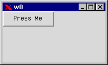
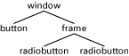

2 Interface Functions
2.1 Overview
The following interface functions are included with the graphics system:
- gs:start(). This function starts the graphics server and returns its object identifier. If the graphics server has already been started, it returns its original identifier.
- gs:stop(). This function stops the graphics server and closes all windows which gs has launched. This function is not the opposite of gs:start/0 because gs:stop/1 causes all applications to lose the graphics server and the objects created with the gs system.
- gs:create(Objtype, Parent, Options). This function creates a new object of specified Objtype as a child to the specified Parent. It configures the object with Options and returns the identifier for the object, or {error,Reason}.
- gs:create(Objtype, Name, Parent, Options). This function is identical to the previously listed function, except that a Name is specified to reference the object. Name is an atom.
- gs:destroy(IdOrName). This function destroys an object and all its children.
- gs:config(IdOrNeme, Options). This function configures an object with Options. It returns ok, or {error,Reason}.
- gs:read(Id_or_Name, OptionKey). This function reads the value of an object option. It returns the value, or {error,Reason}.
The above list contains all the function which are needed with the graphics system. For convenience, the following aliases also exist:
- gs:create(Obttype, Parent).
- gs:create(Objtype, Parent, Options).
- gs:create(Objtype, Parent, Option).
- gs:create(Objtype, Name, Parent, Options).
- gs:create(Objtype, Name, Parent, Option).
- gs:Objecttype(Parent).
- gs:Objecttype(Parent,Options).
- gs:Objecttype(Parent, Option).
- gs:Objecttype(Name, Parent, Options).
- gs:Objecttype(Name, Parent, Option).
- gs:config(IdOrName, Option).
These shorthands can be used as follows:
- gs:window(gs:start(), {map,true}).
- gs:button(W).
- gs:config(B,{label,{text,"Hi!"}}).
The create_tree/2 function is useful for creating a large hierarchy of objects. It has the following syntax:
create_tree(ParentId,Tree) -> | {error,Reason}
Tree is a list of Object, and Object is any of the following:
- {ObjectType,Name,Options,Tree}
- {ObjectType,Options,Tree}
- {ObjectType,Options}
The following example constructs a window which contains two objects, a button and a frame with a label:
R = [{window,[{map,true}],
[{button,[{label,{text,"Butt1"}}]},
{frame,[{y,40}],[{label,[{label,{text,"Lbl1"}}]}]}]}],
gs:create_tree(gs:start(),R).
2.2 A First Example
The first action required is to start up the graphics server. This operation returns an identifier for the server process, which registers itself under the name gs. If a graphics server was already started, its identifier is returned. We can now create objects and configure the behavior and appearance of these objects. When all objects are created and configured in a top level window, we map it on the screen to make it visible. The example below shows how to create a window with a button that says "Press Me".
-module(ex1).
-copyright('Copyright (c) 1991-97 Ericsson Telecom AB').
-vsn('$Revision: /main/release/2 $ ').
-export([init/0]).
init() ->
S = gs:start(),
%% the parent of a top-level window is the gs server
Win = gs:create(window,S,[{width,200},{height,100}]),
Butt = gs:create(button,Win,[{label, {text,"Press Me"}}]),
gs:config(Win, {map,true}),
loop(Butt).
loop(Butt) ->
receive
{gs, Butt, click, Data, Args} ->
io:format("Hello There~n",[]),
loop(Butt)
end.
The following steps were completed in this code:
- start a graphics server
- create a window of specified width and height
- create a button with the text "Press Me"
- map the window on the screen
- enter the event loop.
The event loop is where we receive events from gs. In this case, we want to receive a click event from the button. This event is delivered when the user presses the button.
Figure 2.1: "Press Me" Button Example
The Erlang gs system includes many examples. All examples in this document can be found in the doc/users_guide/examples/ directory. In addition, there is an example directory which contains examples of fractal trees, bouncing balls, a color editor, and a couple of other gs applications.
2.3 Creating Objects
You create an object of a specified type with the create/3 or the create/4 function. The difference is that the create/4 function allows you to assign names to the objects. You can then refer to the object instead of using the object identifier. The two forms of the create function look as follows:
ObjId = gs:create(Objtype, Parent, Options)
ObjId = gs:create(Objtype, Name, Parent, Options)
Examples of built-in object types are:
- window
- frame
- menu
- button
- radio button
- list box.
Objects are created in a hierarchical order. The top level object is the window object which is a container object for most other object types.
Figure 2.2: Hierarchy of Objects
A frame object is like a sub-window but also a container object which can have children objects.
The create/3 or create/4 functions return an object identifier, or the tuple {error, Reason}. The object identifier uniquely identifies the object within the system. The object identifier is used to:
- reconfigure an object
- identify events from a particular object.
2.4 Ownership
The process which creates an object is said to own the object. When a process dies, all objects owned by the process are destroyed. The ownership also means that all events generated by a specific object are delivered to the owner process. The graphics server keeps track of all Erlang processes that create objects. It is therefore able to take appropriate actions if a process should die.
2.5 Naming Objects
As shown previously, the create/4 function can be used to name objects. The name should be a unique atom which is used to reference the object. The advantage of naming objects is that we do not have to pass object identifiers as arguments to the event loop. Instead, we can use the object name in our code. To name objects in the following example, the code gives the name win1 to the window, and b1 to the button.
-module(ex2).
-copyright('Copyright (c) 1991-97 Ericsson Telecom AB').
-vsn('$Revision: /main/release/2 $ ').
-export([init/0]).
init() ->
S = gs:start(),
gs:create(window,win1,S,[{width,200},{height,100}]),
gs:create(button,b1,win1,[{label, {text,"Press Me"}}]),
gs:config(win1, {map,true}),
loop().
loop() ->
receive
{gs, b1, click, Data, Args} ->
io:format("Hello World!~n",[]),
loop()
end.
The name is local for the process which creates the object. This means that the name have a meaning only for one process. Different processes can give different objects the same name. When passing references to objects between processes, the object identifier has to be used because names only has a meaning in a process context. If necessary, the object identifier can be retrieved by reading the id option.
When using distributed Erlang, objects should be named carefully. A named object always refers to an object in the graphics system on the node where it was created. The syntax {Name,Node} should be used when referring to a named object on another node.
The following example receives a canvas object from another node and creates a line named myline1 that will appear in the canvas. Also, this example demonstrates how to configure the line using the special syntax.
foo() ->
receive
{gs_obj,Canvas,FromNode} -> ok
end,
gs:create(line,myline1,Canvas,[{coords,[{10,10},{20,20}]}]),
gs:config({myline1,FromNode},[{buttonpress,true}]).
Unnamed objects are transparent. For example, a line object can be created from a canvas on another node and then configured as any other object.
bar() ->
receive
{gs_obj,Canvas,_FromNode} -> ok
end,
L = gs:create(line,Canvas,[{coords,[{10,10},{20,20}]}]),
gs:config(L,[{buttonpress,true}]).